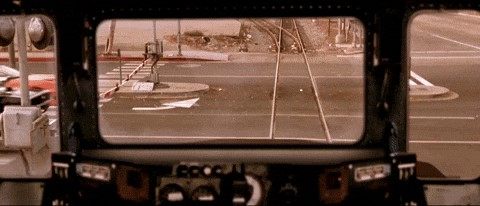
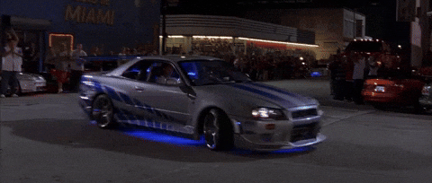
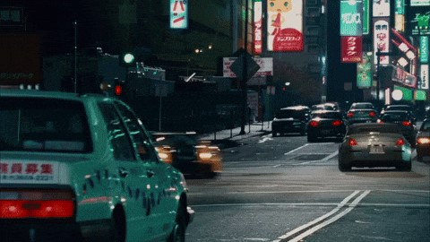
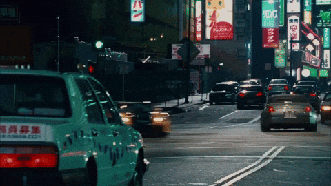
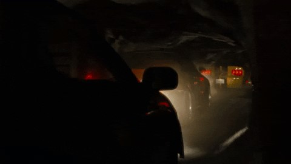
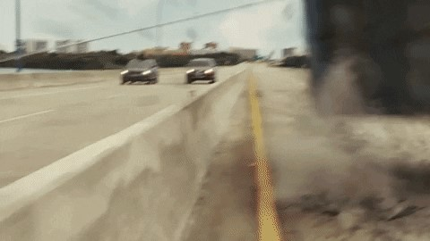
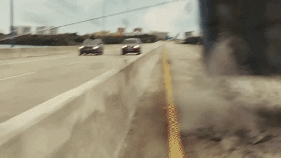
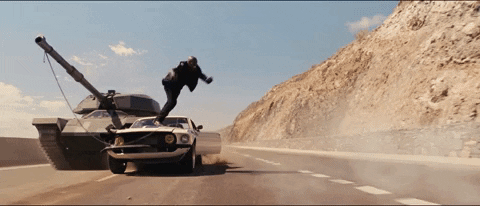

Cronologia: Versoes do Legado
Acompanhe a evolucao do sistema e os principais updates da familia.
Velozes e Furiosos
Inicializacao do protocolo Familia. Build estavel focada em corridas de rua e integracao de sistemas de Nitro.
v1.0 | 2001

Carro em Destaque: Toyota Supra / Dodge Charger.
Local: Los Angeles, Califórnia.
Missão: Ganhar o respeito das ruas em corridas.
Fato Curioso: O lendário Dodge Charger de 900 cavalos do Dom faz sua primeira aparição aqui.
+ Velozes + Furiosos
Expansao para novos servidores em Miami. Upgrade de performance e novos drivers de alta precisao detectados.
v2.0 | 2003

Carro em Destaque: Nissan Skyline GT-R R34.
Local: Miami, Flórida.
Missão: Infiltração no cartel para derrubar um barão das drogas.
Fato Curioso: Brian O'Conner usa o Skyline para saltar uma ponte levadiça logo na primeira corrida.
Desafio em Toquio
Implementacao de novas mecanicas de Drift. Nova interface visual e otimizacao de curvas em alta velocidade.
v3.0 | 2006


Carro em Destaque: Mazda RX-7 / Mitsubishi Lancer Evo IX.
Local: Tóquio, Japão.
Missão: Aprender a arte do Drift para enfrentar o Rei do Drift (DK).
Fato Curioso: É o primeiro filme a focar 100% na técnica de curvas e não apenas em retas, Além de que na ordem cronologica de acontecimentos ele deveria ser depois do 6 filme.
Velozes e Furiosos 4
Reativacao do Core original. Sincronizacao de banco de dados entre Toretto e O'Conner para operacoes cross-border.
v4.0 | 2009

Carro em Destaque: Nissan Skyline GT-R R34 (Prata).
Local: Fronteira EUA/México.
Missão: Vingar um assassinato e destruir um império de túneis subterrâneos.
Fato Curioso: Marca o retorno oficial do elenco original após 8 anos.
Velozes e Furiosos 5
Major Update: Migracao para arquitetura Heist (Assalto). Integracao de multiplos modulos em uma unica rede global.
v5.0 | 2011


Carro em Destaque: Dodge Charger SRT-8 (Preto Fosco).
Local: Rio de Janeiro, Brasil.
Missão: Roubar 100 milhões de dólares de um político corrupto usando um cofre gigante.
Fato Curioso: A cena do cofre arrastado pelas ruas é considerada uma das melhores perseguições da história.
Velozes e Furiosos 6
Implementacao de combate avancado e defesa contra bugs externos. Otimizacao de performance em pistas europeias.
v6.0 | 2013

Carro em Destaque: Dodge Charger Daytona / Flip Car.
Local: Londres, Inglaterra.
Missão: Caçar uma organização de mercenários militares que usam carros modificados.
Fato Curioso: O "Flip Car" foi construído na vida real e conseguia realmente capotar carros de verdade.
Velozes e Furiosos 7
Deploy final do modulo "See You Again". Implementacao de sistemas de vigilancia global e conclusao de ciclo de legado.
v7.0 | 2015
Carro em Destaque: Lykan Hypersport.
Local: Abu Dhabi, Emirados Árabes.
Missão: Recuperar o "Olho de Deus" e proteger a família de um assassino profissional.
Fato Curioso: Lykan Hypersport é um dos carros mais caros do mundo, saltando entre três arranha-céus no filme. Além da enorme tristeza em ser o último filme com a aparição do Brian.
Estatísticas da Franquia
Filmes
Bilhões em Bilheteria
Países Visitados
KM/H Velocidade Máxima
Entrar para a Família
A família não se escolhe ela se conquista. Faça parte desta equipe.
Alta Performance
Projetos reais, deadlines de verdade e código que roda em produção. Aqui não tem simulação.
Time Unido
Na família, ninguém é abandonado. Code review, pair programming e suporte total dos colegas.
Evolução Constante
De júnior a sênior, do zero ao deploy. A jornada nunca para — só muda de velocidade.
Contato
Entre em contato para parcerias ou suporte técnico.
Fale com a gente
Nossa equipe está pronta para responder suas dúvidas sobre parcerias, suporte técnico ou só para bater um papo sobre carros e código.
- (47) 99127-0401
- matheus.v21@aluno.ifsc.edu.br
- Canoinhas, Santa Catarina — Brasil